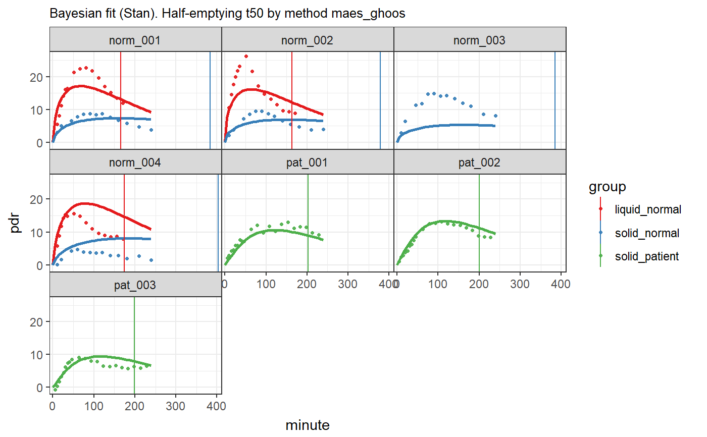

R/stan_group_fit.R
stan_group_fit.RdFits exponential beta curves to 13C breath test series data using Bayesian Stan methods, by assuming fixed between group effects. This model is overly parsiomonious. Do not use it unless you check the results carefully and understand why fits can be very bad.
stan_group_fit(data, dose = 100, sample_minutes = 15, student_t_df = 10, chains = 2, iter = 1000, model = "breath_test_group_1")
| data | Data frame or tibble as created by |
|---|---|
| dose | Dose of acetate or octanoate. Currently, only one common dose for all records is supported. |
| sample_minutes | If mean sampling interval is < sampleMinutes, data are subsampled using a spline algorithm |
| student_t_df | When student_t_df < 10, the student distribution is used to model the residuals. Recommended values to model typical outliers are from 3 to 6. When student_t_df >= 10, the normal distribution is used. |
| chains | Number of chains for Stan |
| iter | Number of iterations for each Stan chain |
| model | Name of model; use |
A list of classes "breathteststangroupfit", "breathteststanfit" and "breathtestfit" with elements
coef Estimated parameters as data frame in a key-value format with
columns patient_id, group, parameter, method and value.
Has an attribute AIC.
data The effectively analyzed data. If density of points
is too high, e.g. with BreathId devices, data are subsampled before fitting.
stan_fit The Stan fit for use with shinystan::launch_shiny
or extraction of chains.
Base methods coef, plot, print; methods from package
broom: tidy, augment.
library(breathtestcore) library(dplyr) data("usz_13c", package = "breathtestcore") data = usz_13c %>% dplyr::filter( patient_id %in% c("norm_001", "norm_002", "norm_003", "norm_004", "pat_001", "pat_002","pat_003")) %>% breathtestcore::cleanup_data() fit = stan_group_fit(data, chains = 1, iter = 100) plot(fit) # calls plot.breathtestfitcoef(fit)#> # A tibble: 80 x 5 #> patient_id group parameter method value #> <chr> <chr> <chr> <chr> <dbl> #> 1 norm_001 liquid_normal beta exp_beta 1.79 #> 2 norm_001 liquid_normal k exp_beta 0.0108 #> 3 norm_001 liquid_normal m exp_beta 36.9 #> 4 norm_001 liquid_normal t50 bluck_coward 23.9 #> 5 norm_001 liquid_normal t50 maes_ghoos 105. #> 6 norm_001 liquid_normal t50 maes_ghoos_scintigraphy 34.9 #> 7 norm_001 liquid_normal tlag bluck_coward -10.3 #> 8 norm_001 liquid_normal tlag maes_ghoos 53.9 #> 9 norm_001 solid_normal beta exp_beta 1.86 #> 10 norm_001 solid_normal k exp_beta 0.00487 #> # ... with 70 more rows